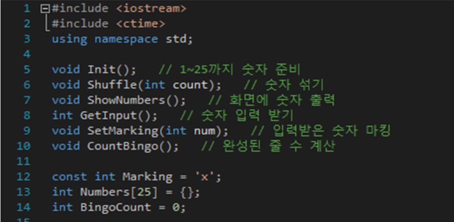

C 언어에 객체지향 프로그래밍을 지원하기 위한 내용이 덧붙여진 것이라고 할 수도 있지만, 애초부터 객체지향을 염두에 두고 만들어진 언어와는 다르게, 단지 더 좋은 C언어로서 수속형 언어로 취급하기도 한다. 초기의 C++은 C 위에 놓인 트랜스레이터로 구현되었다.
즉, C++ 프로그램을 일단 C 프로그램으로 변환하고 나서 C 컴파일러로 컴파일하는 식이었고 따라서 C 언어에 대해 상위 호환성을 갖는 언어였다. 그 후, C 언어의 표준 규격이 바뀔 때 const 수식 등 C++의 기능이 C 언어에 받아들이기도 했다. 현재 C 언어와 C++와의 사이에는 엄격한 호환성은 없다. 특히 C99의 출현으로 C 언어와의 호환성은 깨져 버렸다. 따라서 C99 이후로 C++은 C의 수퍼셋(superset)이 아니다.
그러나, C++17 표준안에서는 다시 C언어가 C++의 진부분집합이 될 것이 확실해 보인다. 현재 C와 C++가 명확한 구별 없이 혼재되어 사용되는 컴파일러가 대부분이지만 C99 이후의 문법을 C++ 컴파일러에서 컴파일 할 경우 오류가 발생할 수 있다. 다음과 같은 다양한 기능을 가지고 있어 C++ 언어의 표준 규격은 몹시 복잡하다. C++ 표준의 모든 사항을 완전하게 지원하는 컴파일러는 현재 손꼽을 정도이다.